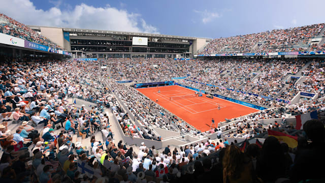

North Paris Arena

The exact origins of the sport of boxing are unknown, though some of the earliest evidence (dating from the 3rd millennium BCE) comes from Sumerian artifacts found in present-day Iraq. Boxing was introduced to the ancient Olympic Games in 688 BC, where boxers used soft leather thongs to bind their hands and forearms for protection. Boxing seemed to disappear with the fall of the Roman Empire before resurfacing in the 17th century in England, where records of amateur boxing began in 1880. Initially, five weight categories were contested: bantam, not exceeding 54 kilos; feather, not exceeding 57 kilos; light, not exceeding 63.5 kilos; middle, not exceeding 73 kilos; and heavy, any weight. Olympic boxing is governed by a special set of rules. Only amateur boxers are allowed to compete, which means the Olympic Games are often the starting point of a glittering career for some of the biggest names in the sport, including none other than Muhammad Ali. Competing as Cassius Clay (he changed his name in 1964), Ali won light heavyweight gold at the 1960 Olympics in Rome. Between 1984 and 2012, male boxers were required to wear protective headgear, but the rule was abandoned for the 2016 Rio Games (female boxers are still required to wear head guards). Each bout is disputed over three rounds of three minutes each for men, and four rounds of two minutes each for women. At the end of every round, each of the judges determine a winner based on the judging criteria and award the victor 10 points for the round. The loser of the round can be awarded anywhere between seven to nine points based on the level of performance in that round. After the bout ends, each judge adds up the round scores to determine a final winner.